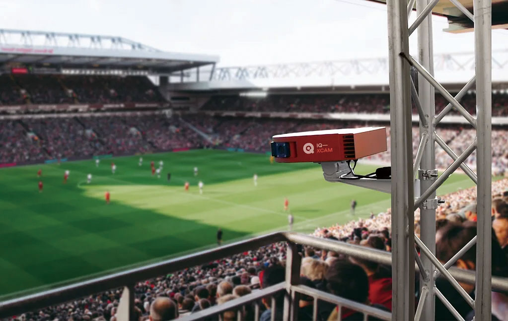
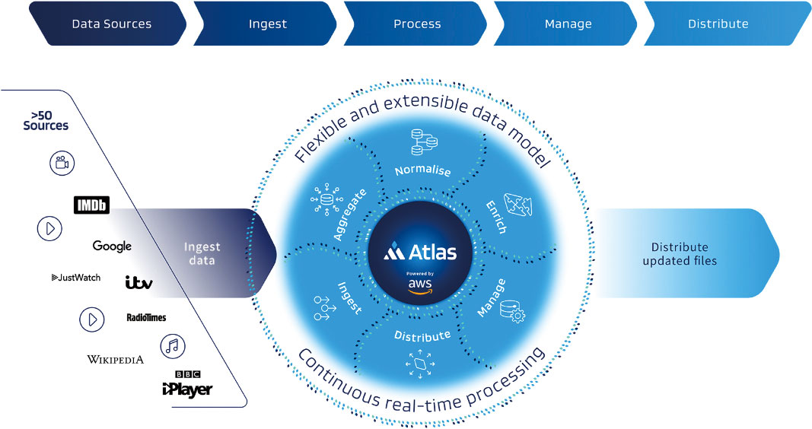
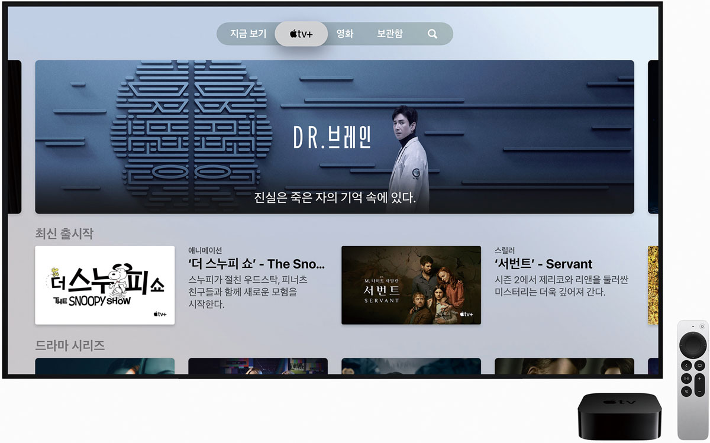
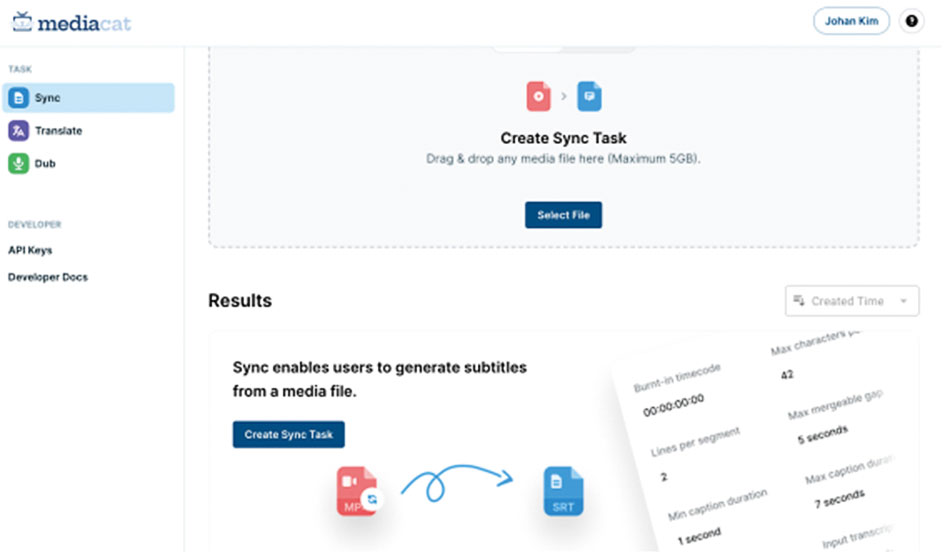
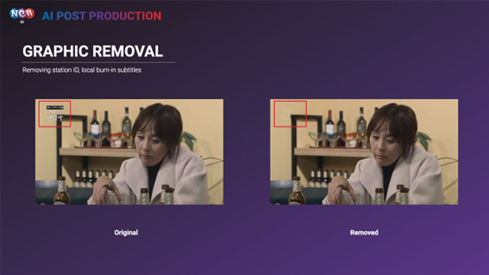
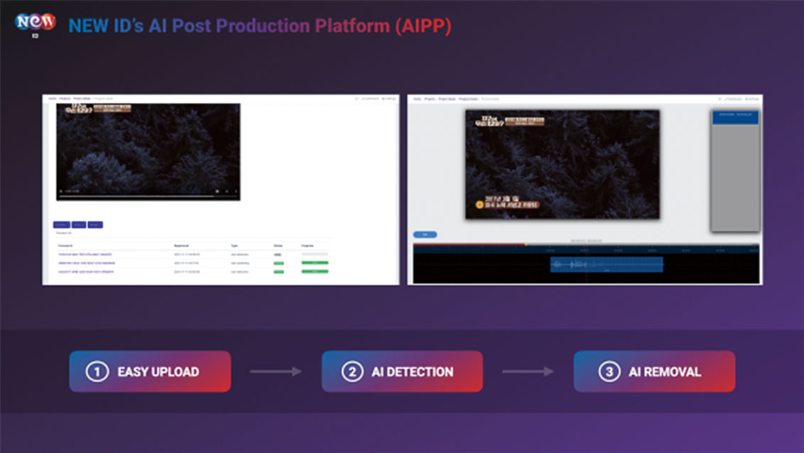

Artificial Intelligence

AI현실화된 AI와
방송 콘텐츠의 시너지
김조한
(뉴 아이디 사업개발 이사)
-
AI를 도입하려는 질문에 많은 방송사/플랫폼의 임원들은 AI가 할 수 있는 일은 사람이 할 수 없는 일이 아닌 반복적으로 사람의 시간과 노력이 많이 들어가는 분야에 먼저 투입될 것이라고 하였다. 2022년 AI는 전문 인력 20명과 20대의 카메라 없이 스포츠 중계를 하게 만들어 주며, 많은 사람들이 하나하나 입력하던 메타데이터도 시청자에 최적화되게 찾아주며, 전문 번역가 수십 명이 몇십 시간 이상 해야 할 일을 몇 분 만에 해결해 주며, 불가능하다고 생각되던 유통의 문제도 해결해 주기 시작했다.
-
1. 3년 전 마주친 AI를 접목하려는 방송 제작 환경코비드19(COVID-19)가 있기 3년 전 라스베이거스에서 있었던 방송 기술 전시회 엔에이비쇼(NABSHOW)에서도 AI(ARTIFICIAL INTELLIGENCE)/ML(MACHINE LEARNING)을 이용하여 방송 환경의 비용과 시간을 줄이려는 노력들은 있었다. AI를 도입하려는 질문에 많은 방송사/플랫폼 임원들은 AI가 할 수 있는 일은 사람이 할 수 없는 일이 아닌 반복적으로 사람의 시간과 노력이 많이 들어가는 분야에 먼저 투입될 것이라고 하였다. 영상을 만드는 것보다는 만들어진 영상을 가지고 AI를 통해서 색인(Index)해서 원하는 장면을 찾거나 찾을 수 있게 만들어 주는 기능들에 초점을 맞추었다. AWS(Amazon Web Service)의 경우 화자를 AI를 통해서 구분해서 클로즈캡션(Closed Caption)에 말하는 사람을 명시해 주는 기능들이 돋보였었다.그림 1필자의 NAB2019 사진, AI로 방송 촬영 중 사람을 찾아주는 솔루션을 시연오프라인 행사를 멈추게 만든 코비드 사태를 지나 3년 후 라스베이거스가 아닌 네덜란드에서 열린 국제 방송 컨밴션인 IBC2022에서 만난 AI 솔루션들은 3년 전과 많이 다르진 않았지만 보다 실질적인 활용 사례들을 찾아 볼 수 있었다.
-
2AI를 활용한 스포츠 중계 <IQ SPORTS PRODUCER >OTT시대가 오면서 가장 비싼 가치를 지니게 된 방송은 라이브이다. 같은 콘텐츠를 동시간에 시청하게 만드는 힘은 라이브 밖에 없다. 그중에서 스포츠는 단연 이 분야의 꽃이다. 하지만, 스포츠는 말 그대로 비용과의 싸움이다. 축구 중계를 예로 들어보자 적어도 고가의 20개 이상의 카메라가 필요하고, 20명 이상의 전문 촬영 인력이 필요하다고 한다. 중계차도 동원이 되어야 하고, 20개 이상의 카메라를 통제하는 인력도 필요할 것이다. AI를 통해 4~5개의 카메라가 내장된 카메라 3대만으로 라이브 송출을 할 수 있다면 어떨까? 그리고, 실제 인력도 현장에 필요하지 않다면?그림 2MOBILEVIEWPOINT에서공개한IQXCAMAI를통해스포츠중계를자동으로해주는서비스
출처: https://www.iqvideosolutions.com/
그림 3IQ 스포츠 프로듀서의 촬영 솔루션을 설명하는 그림출처: https://www.iqvideosolutions.com/
3년 전에 봤을 때는 프로토타입(Prototype)이었던 IQ SPORTS PRODUCER는 2020년 올림픽 중계를 AI를 통해서 현실화되었다. 많은 라이브 중계를 원하는 스포츠 OTT의 넷플릭스(Netflix)라고 불리는 더존(DAZN)과 같은 플랫폼에는 정말 필요한 솔루션이 아닐 수 없다.
실제 사용기를 보면, 360 VR 촬영 기술과 비슷하다. 중앙의 4K 카메라가 VR 카메라 역할을 하며, AI가 공과 사람을 인지하여, 그 부분을 실시간으로 잘라내는 역할을 하는 것이다. 그리고, 좌우의 사이드 카메라가 경기장의 선수들을 가까이 잡아주는 역할을 한다. 비인기 종목의 경기에서는 이런 AI 기술의 도입이 필요하다고 생각한다. 비인기 종목을 인기 종목으로 만드는 방법은 멀리 있지 않을 수도 있다. -
3AI가 만드는 메타데이터 <MetaBroadcast>우리가 OTT 서비스에서 가장 먼저 접하는 것은 무엇일까? 제목, 프로그램 썸네일이라고도 부르는 포스터, 그리고 감독, 작가, 배우들 이 모든 것들은 콘텐츠를 선택하는데 가장 중요한 메타데이터(Metadata)이다. 콘텐츠가 제작되고 유통을 하기 위해서 가장 필요로 하는 날개가 바로 메타데이터이다. 우리가 흔히 콘텐츠를 노출시키기 위한 검색(Search), 추천(Recommendation), 탐색(Discovery)의 3가지 행동에 가장 필요한 데이터인 것이다. 이런 메타데이터 전문회사라고 하면 닐슨(Nieslen)의 그레이스노트(Gracenote)가 유명한데, AI를 통해서 제2의 그레이스노트를 꿈꾸는 회사가 있었다. 영국에 기반을 둔 메타브로드캐스트는 AI/ML을 사용하여 메타데이터를 고도화 하는 방법을 연구하고 있었으며, 2개 이상의 메타데이터 소스에서 고객들이 선호하는 메타데이터를 확보하고 거기에 맞는 표준 양식으로 변경할 수 있는 기존의 메타데이터 비즈니스는 인력을 집중해야 하는 비즈니스였는데 그걸 AI를 통해서 해결한 사례가 될 것 같다.
그림 4메타 브로드캐스트의 메타데이터 수집 시스템인 아틀라스(ATLAS)출처: https://www.metabroadcast.com
그림 5메타데이터를 가장 잘 쓴 UI로 유명한 애플 TV UI출처: Apple Newsroom
IMDB, 구글(Google), 위키피디아(Wikipedia)에서 데이터를 수집하고 고객들이 원하는 포맷으로 확보할 수 있다면, 애플TV(Apple TV)처럼 메타데이터를 이용한 멋진 UI를 만드는 것도 가능해질 것이다.
이 서비스는 영어권 데이터에 최적화 되어 있었다. 한국어를 이용한 AI 메타데이터 회사는 없다는 이야기이다. 하지만 한국 시장만을 바라본다면, 새로운 BM을 만들기엔 시장이 크지 않다. 아쉬운 부분이다. 언어의 장벽은 우리가 데이터 회사로 성장하게 어렵게 만든다. 하지만 그걸 해결해 주는 회사도 있다. -
4AI를 이용한 방송 콘텐츠의 글로벌 화 <XL8.AI>한국 콘텐츠의 최근 5년간의 성공의 스토리에는 OTT 서비스를 빼놓을 수 없다. 특히 넷플릭스를 빼놓고는 이야기하기 어려울 것이다. 그 넷플릭스가 다른 OTT 플랫폼과 차별화된 점은 바로 현지화(Localization)에 대한 노하우일 것이다. 그런 넷플릭스가 탐낼만한 솔루션을 만드는 회사가 있었다. IBC2022에서 만난 반가운 회사인 엑스엘에이트(XL8)는 AI를 통한 현지화 솔루션을 제공하는 회사이고, 이미 많은 OTT에서 초벌부터 많은 영역에서 XL8의 솔루션을 사용하고 있다고 한다.
특히 이번 IBC2022에서는 미디어캣이라고 하는 AI 자막 솔루션을 선보였다. 영상파일의 업로드를 통해 자동 번역은 물론, 영어, 한국어에서 다양한 언어로 번역을 제공하는데, 영상 자막에 최적화 되어 있다는 점이 특징이다. 문서 번역이 아닌 영화, 드라마, 예능에 맞는 자막을 계속 학습시켜서 영상 자막에 최적화 시켰다는 것이 다른 AI 번역 회사와 다른 점이다.그림 6라이브 채널에서 실시간 번역 서비스를 설명하고 있는 정영훈 대표 출처: XL8.AI Facebook
그림 7미디어 캣의 홈페이지 화면
출처: XL8.AI Facebook
그림 7미디어 캣의 홈페이지 화면출처: https://mediacat.xl8.ai/
최근 각광을 받고 있는 새로운 방송 플랫폼인 패스트(FAST: Free Ad-supported Streaming Television의 약자로 광고기반의 무료 TV를 말함)에 최적화된 실시간 번역 기능도 제공한다는 점이다.
ENA 드라마 <이상한 변호사 우영우>와 넷플릭스 드라마 <오징어 게임>사례에서 보여주듯 자막뿐만 아니라 더빙의 중요성도 점점 커지고 있는데 이 부분 또한 최근 서비스를 강화하고 있다는 점이 앞으로 방송을 제작하고 유통하려는 회사에겐 꼭 필요한 솔루션 업체가 될 듯 하다. -
5 AI가 제거해주는 방송 유통의 장벽 <NEW ID>해외에서 비교적 쉽게 접할 수 있는 한국 콘텐츠는 뭐가 있을까? 가장 먼저 K-POP을 가장 쉽게 접할 수 있을 것이다. 그리고, K-드라마라고 생각한다. 하지만 우리가 즐겨보는 예능 콘텐츠를 해외에서 접하기는 쉽지 않다. 재미가 없어서일 수도 있지만 우리는 이미 <복면가왕>, <너의 목소리가 보여>, <꽃보다 할배> 등의 예능프로그램과 같은 콘텐츠의 리메이크 성공 사례들을 보았다.
접할 수 있는 이유를 들자면 두 가지를 들 수 있을 것이다. 첫째, 콘텐츠에 많이 삽입된 한글 그래픽을 들 수 있겠다. 특히 한국 예능의 경우, 소리를 켜지 않고서도 콘텐츠를 즐길 수 있을 만큼 한글 자막의 사용이 빈번한데 이런 한글 그래픽이 해외에서는 콘텐츠를 쉽게 접근하지 못하게 하는 이유가 되고 있다. 또한 방송 프로그램 로고, 시청 등급과 같은 그래픽도 문제이다. 물론 최근에는 이런 부분이 고려되어 제작되는 경우도 있지만 그렇지 않은 경우도 많이 있다. 최근 드라마에서 영어 대사를 많이 사용하는 경우가 있는데 이때 한글 자막이 그래픽이 들어간 경우 해외 OTT 플랫폼에서 삭제를 하고 공급을 하길 바라는 이슈 때문에 유통사에서 난감해 하던 적이 있었다.그림 8프로그램 로고가 이슈가 되어 지운 케이스출처: 뉴 아이디
그림 9AIPP 플랫폼 소개, 콘텐츠 업로드, 디텍션, AI 삭제 과정출처: 뉴 아이디
둘째, 음악 저작권 이슈이다. 드라마는 OST 제작에 노력을 기울이지만 예능은 그렇지 않고, 1시간에 150개 가까운 음악을 쓰는 경우도 있다. 이런 경우엔 저작권 이슈로 인해 처음부터 유통을 포기하는 경우도 많이 있다. 음악 큐시트(Que-sheet)와 M&E(Music and Effect) 분리가 되어 있으면 수정을 할 수도 있겠지만 그렇지 않은 경우가 많아 해외 수출용으로 클린본을 만들 수 없는 경우가 태반이다. 해외 플랫폼을 위한 제작업을 하기 위해서는 음악 큐시트와 M&E가 없으면 시작도 못했던 상황이었다. 그런 부분을 AI가 해결해 주기 시작했다. SK텔레콤과 함께 개발한 뉴 아이디의 AIPP(AI Post Production) 플랫폼은 번인되어 있는 한글 자막, 방송사 로고, 브랜드, 시청 등급을 손쉽게 AI를 통해 지워주며, 음악과 대사가 겹쳐져 있는 예능 프로그램 그리고 현장에서 들어간 라디오 음악, 카페 음악 등을 목소리를 살려주며 가사가 있는 배경 음악도 지워주는 솔루션을 제공하고 있다.
필자가 IBC2022를 참석한 또 다른 이유가 AI 포스트 프로덕션(AIPP: AI Post Production)을 개발하는 업체들의 동향을 찾아보기 위해서였다. 결과적으로는 그런 솔루션을 AI를 통해 제공하는 업체는 아쉽게도 찾을 수가 없었다.
해외로 나가기 위해서는 단순히 자막과 더빙만 있으면 되는 것이 아니라 현지에 맞는 콘텐츠 패키징이 필요하다. AI가 없었다면 시간의 문제가 아니라 해결이 안되는 부분이었기 때문에 맨 앞에서 이야기한 시간을 절약해주는 솔루션이 아닌 불가능이라고 생각되었던 부분을 해결해 주는 솔루션이 되었다. -
6 마치며AI가 방송 제작환경을 앞으로 어떻게 바꾸어 놓을까? 3년 전에 필자는 이런 고민을 했을 때, 현재와 같은 발전이 이뤄지리라 생각하지 못했다. 지금은 어찌 보면 방송제작에 있어서 AI의 개입은 초기 단계 일지도 모른다. 최근 AI를 통해서 시놉시스(Synopsis)를 구현하는 게 가능해지는 기술들이 나오고 있고, AI가 그림뿐만 아니라 영상제작도 가능해질지 누가 알겠는가? 제작 환경에 있는 분들이라면 많은 관심을 가져야 할 것 같다. 누가 알겠는가 우리가 만난 고민을 AI가 해결해 줄지도. 현실화된 AI와 방송 콘텐츠의 시너지는 이제 시작인 것 같다.